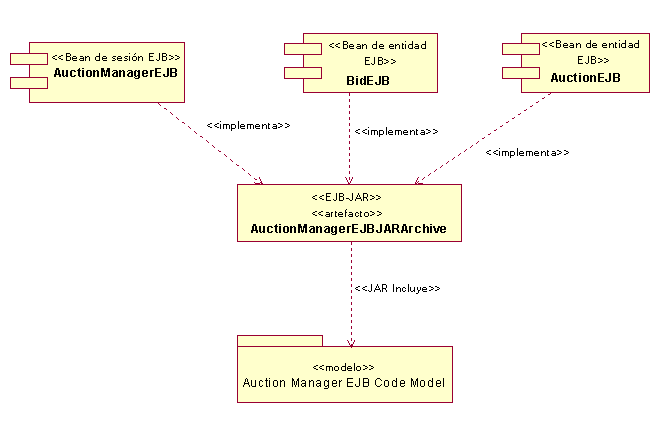
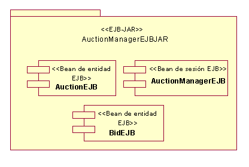
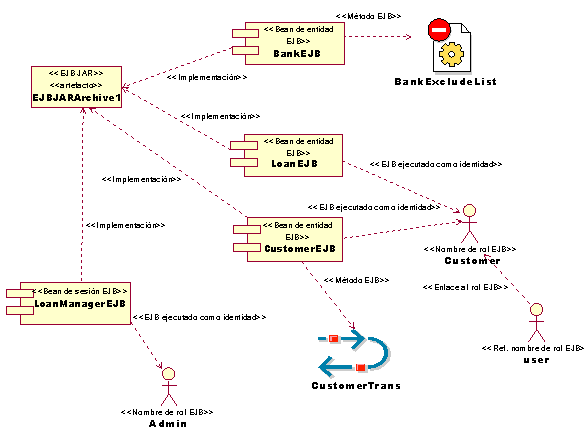
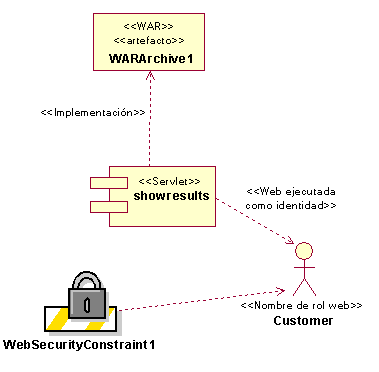

| Directriz: Módulo J2EE |
 |
|
| Elementos relacionados |
|---|
IntroducciónUn módulo J2EE es la unidad de despliegue independiente más pequeña en una aplicación J2EE. Tal como se describe en la sección Concepto: visión general de J2EE hay distintos tipos de módulos J2EE. El número y tamaño de los módulos J2EE afectan a la facilidad con la que se despliega y prueba una aplicación J2EE. También afecta a la facilidad con la que se pueden reutilizar los componentes en otras aplicaciones y la facilidad con la que el sistema se puede adaptar a otras configuraciones de despliegue. Consulte la sección Directriz: ensamblaje de módulos J2EE para obtener información sobre la forma en que ensamblar módulos J2EE. Consulte la sección Directriz: despliegue de módulos y aplicaciones J2EE para obtener información sobre la forma en que desplegar módulos J2EE. Identificación de módulos J2EELos módulos J2EE se crean durante la integración, sin embargo, reflejan decisiones realizadas en la implementación (y de hecho en el diseño). Los módulos J2EE habitualmente se utilizan para empaquetar Subsistemas de implementación, que habitualmente se correlacionan con Producto de trabajo: subsistemas de diseño. Los módulos J2EE deberían contener EJB y clases de ayudante estrechamente relacionadas que únicamente dichos EJB las utilicen. En general, este tipo de relaciones se identifican en el diseño y dichas clases se deberían agrupar en un subsistema de diseño. En la identificación de subsistemas de diseño ya se debería haber considerado los aspectos de reutilización, sustitución y soporte a más de una configuración de despliegue. Sin embargo, cuando se asignan módulos para desplegar en nodos específicos, la debilidad del diseño puede hacerse evidente, y puede ser necesario realizar cambios a los subsistemas de diseño (y/o subsistemas de implementación). Identificar módulos J2EE para que contengan componentes destinados a un único contenedor. Los componentes web se empaquetan en módulos web, los componentes EJB se empaquetan en módulos EJB y los componentes de cliente de aplicación se empaquetan en módulos de cliente de aplicación. Las clases Java regulares que distintos módulos utilicen se deben empaquetar en módulos J2EE distintos. Los archivos JAR que se creen aparecerán en las referencias de vía de acceso a las clases en los módulos que las necesitan (o las comunes de dichas referencias de vía de acceso). En resumen, al identificar módulos J2EE, hay que empezar identificando un módulo para cada subsistema de implementación, a no ser que el subsistema contenga componentes que haya que desplegar en distintos contenedores y, a continuación, definir módulos distintos para cada uno de los contenedores. Modelado de módulos J2EELos módulos J2EE se representan en modelos de implementación como artefactos UML con un estereotipo que identifica su tipo: <<EJB-JAR>>, <<JAR>> o <<WAR>>. La agregación los componentes (como servlets o EJB) en un módulo J2EE se puede mostrar de forma gráfica dibujando una dependencia <<implements>> desde el componente del contenedor al módulo en el que se empaqueta, tal como se muestra en el siguiente diagrama. También se pueden dibujar las dependencias <<JARInclude>> para mostrar la inclusión de todo un paquete Java en el archivador.  Otra opción es representar el archivador como un paquete y mostrar los componentes que lo contienen dentro del paquete tal como se muestra en el siguiente diagrama.  Además, para modelar qué componentes se empaquetan en el archivador, también es posible modelar propiedades de los componentes, que en última instancia están documentadas en el descriptor de despliegue del archivador. A continuación se muestra un ejemplo de cómo modelar algunas propiedades de componente EJB.  En el diagrama anterior se muestra el ensamblaje de los EJB, BankEJB, LoanEJB, CustomerEJB, y LoanManagerEJB en el mismo módulo, EJBJARArchive1. Observe el modelado de las propiedades del método EJB, los roles de seguridad y las transacciones. En este ejemplo, CustomerEJB se ejecuta bajo el tipo de transacción que CustomerTrans especifica (como por ejemplo, "Required"). El código fuente utiliza el rol denominado "user", que está correlacionado con el rol de usuario "Customer" en el descriptor de despliegue. Además, todos los métodos en LoanEJB y CustomerEJB se ejecutan con las credenciales "Customer", incluso si el usuario que los invoca pertenece a un rol distinto. De forma parecida, los métodos LoanManagerEJB se ejecutan como "Admin". Por último, los usuarios no pueden acceder a métodos en BankEJB. A continuación se muestra un ejemplo de cómo modelar algunas propiedades de componentes web.  En el diagrama anterior se muestra el ensamblaje de un servlet en un módulo web. Observe el modelado de los roles de seguridad y las restricciones, donde los usuarios de tipo "Customer" ejecutan métodos en el servlet de mostrar resultados como sí mismos, sujetos a las restricciones de seguridad que definen las propiedades de WebSecurityContraint1. En el Modelo de despliegue se puede mostrar el despliegue de un módulo J2EE en un nodo. Consulte la sección Directriz: descripción de la distribución para aplicaciones J2EE para tratar en más detalle sobre la modelación de la correlación entre módulos y nodos de despliegue. Descriptores de despliegueCada módulo J2EE contiene un descriptor de despliegue estándar de J2EE y de forma opcional podría tener descriptores específicos del proveedor. En la sección Concepto: visión general de J2EE se describen los distintos tipos de descriptores de despliegue. En general, los descriptores de despliegue estándar de J2EE recogen el diseño primario y las decisiones de implementación. Decisiones a las que RUP hace referencia como "decisiones de despliegue" como en qué nodos se ejecuta un componente y cómo está configurado un componente para un nodo en concreto, se recoge en los descriptores de despliegue específicos del proveedor. Los descriptores de despliegue sirven para dos propósitos distintos:
El contenido del descriptor de despliegue se establece cuando se crear el módulo J2EE y cuando se ensambla en una aplicación J2EE. Consulte la sección Directriz: ensamblaje de módulos J2EE para obtener más información sobre la forma en que ensamblar módulos J2EE. Consulte la sección Directriz: ensamblaje de aplicaciones J2EE para obtener más información sobre la forma en que ensamblar aplicaciones J2EE. |
© Copyright IBM Corp. 1987, 2006. Reservados todos los derechos. |